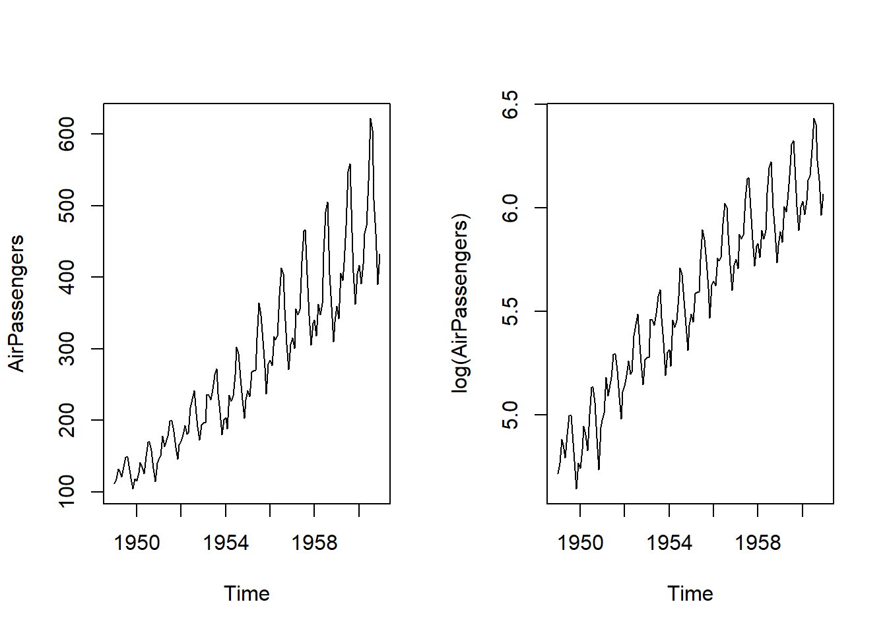
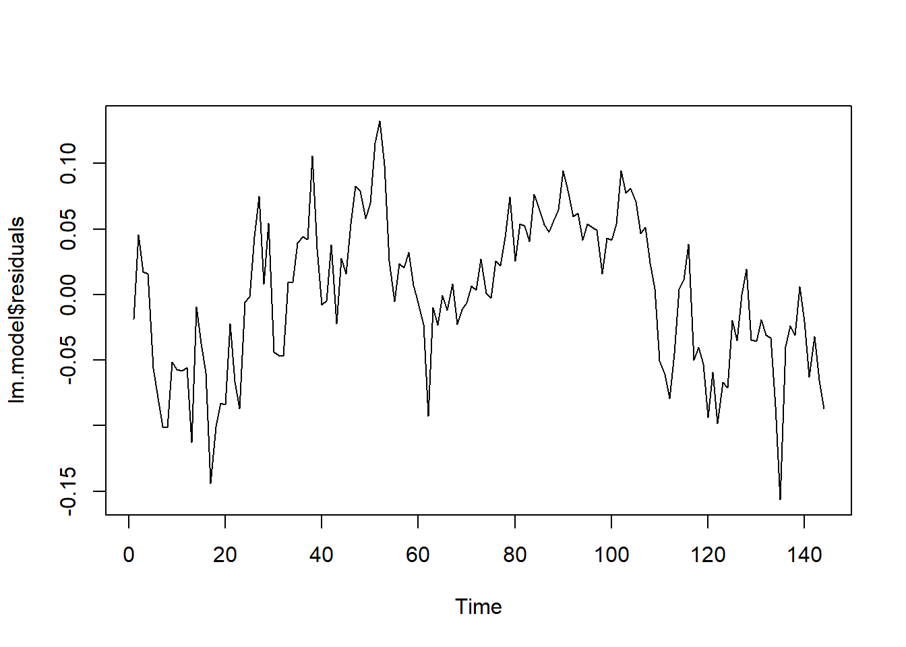
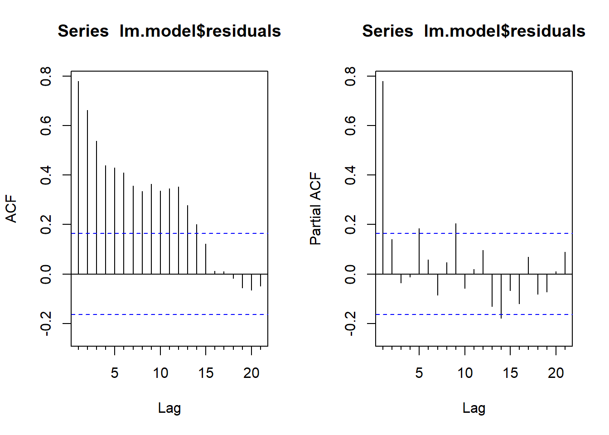
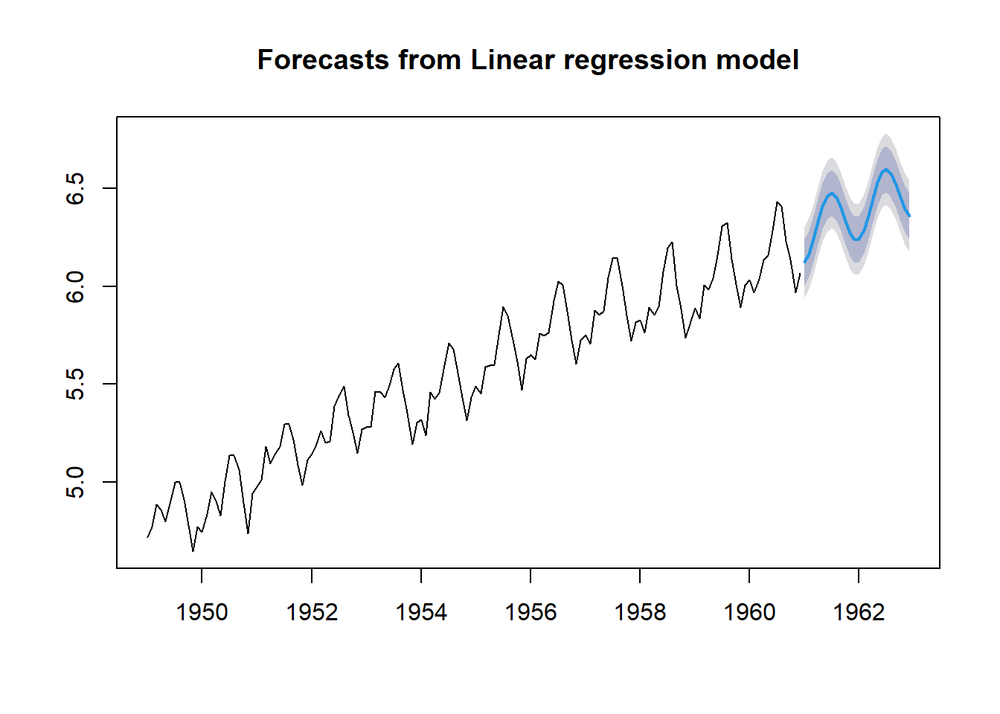
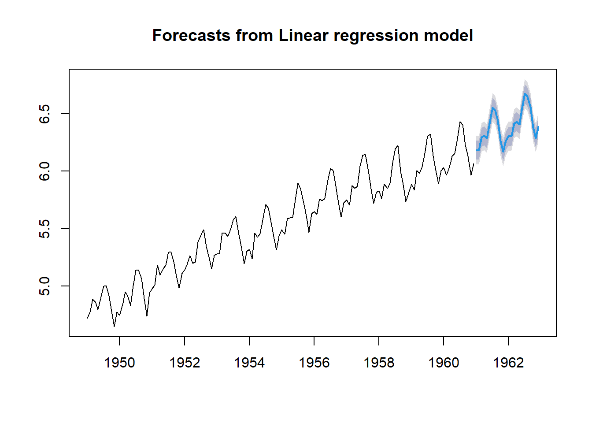
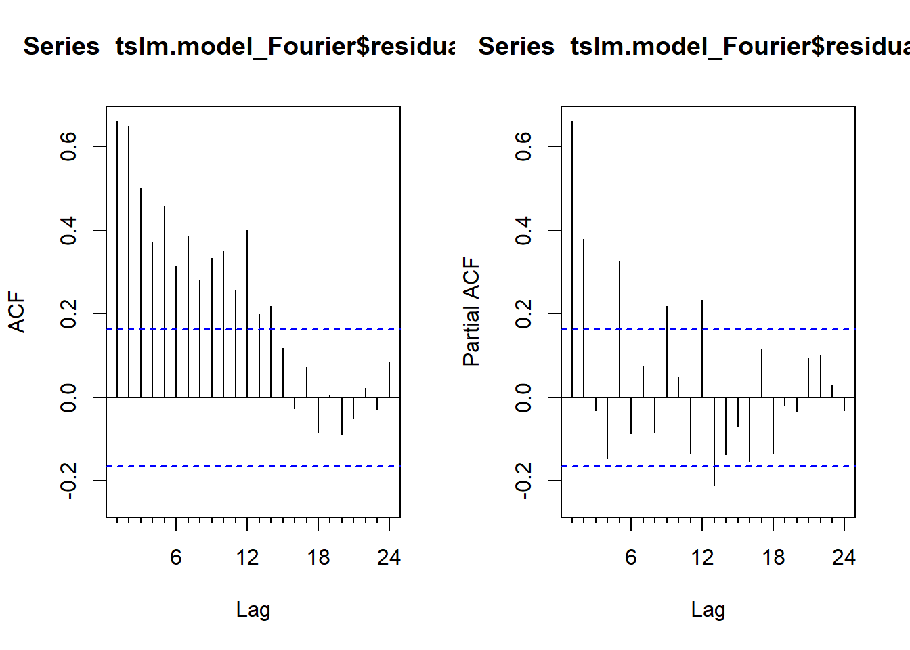
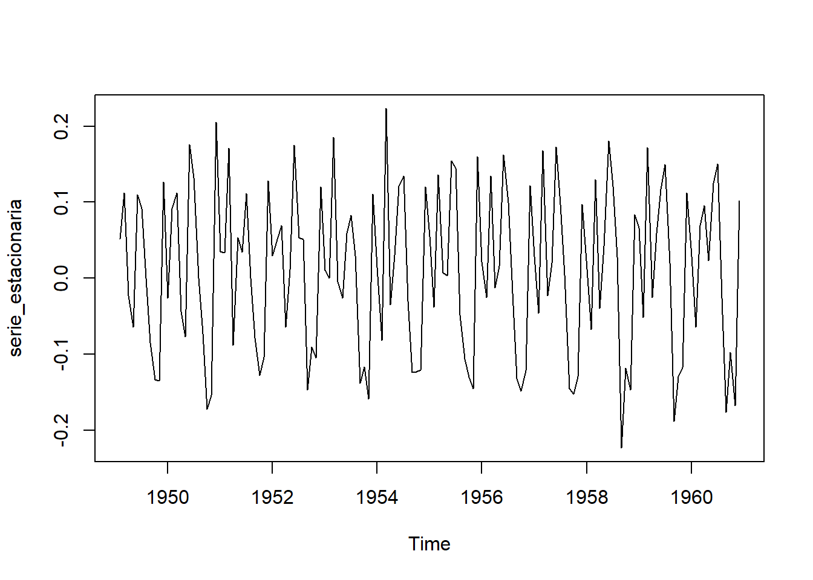

8 Tema 7. Modelos de series temporales con variables exógenas
8.1 Introducción
En los temas anteriores, hemos visto técnicas para analizar series temporales donde se extrae información exclusivamente de la propia serie en estudio, ya sea descomponiendo la serie en varias componentes, o bien identificando el modelo generador a partir de las autocorrelaciones de los datos.
En este tema consideraremos el uso de otras variables diferentes a la variable de interés para explicar y predecir la serie en estudio. Por ejemplo, consideremos el consumo eléctrico horario de un hogar. Por una parte, presenta varias estacionalidades: periodo 24 horas (estacionalidad diaria) y periodo 168 horas (estacionalidad semanal). Además, presenta correlación significativa para el retardo de 1 hora. Por tanto, podríamos plantear un modelo SARIMA para este tipo de series. Sin embargo, también parece claro que existen otros factores externos que influyen en el consumo electrico horario de un hogar, como son la temperatura (debido al uso de climatización eléctrica), el tipo de día (diferenciando entre laborables y festivos) o el precio de la energía (si el usuario tiene contrato indexado al precio de mercado). A estas otras variables, distintas a la variable objeto de estudio y con influencia sobre ésta, se les denominan variables exógenas, que actuarán como predictores.
Notación: En adelante, usaremos la notación \(y_t\) para referirnos al valor de la serie en estudio en el instante \(t\), y usaremos \(x_{i,t}\) con \(i=1,2,...,k\) para referirnos a la variable exógena predictora \(x_i\) en el instante \(t\). Esto supone un cambio respecto a la notación usada en los temas anteriores (donde la serie en estudio se denotaba por \(x_t\)), siendo ahora necesario distinguir entre variable de interés a predecir y variables predictoras.
8.2 El modelo de Regresión Múltiple para series temporales
Por analogía al modelo de Regresión Lineal Múltiple (RLM) visto en asignaturas anteriores, en el contexto de series temporales el modelo RLM se suele expresar de la siguiente forma:
\[ Y_t = \beta_0 + \beta_1 x_{1,t} + \beta_2 x_{2,t} + ...+ \beta_k x_{k,t} + \epsilon_t \quad \text{con} \quad \varepsilon_t \sim N(0,\sigma^2) \ \text{independientes}, t \in \mathbb{T}. \]
En este caso, \({Y_t}\) representa el proceso estocástico generador de la serie en estudio \({y_t}\), y asumimos que los predictores \(x_i\) no son variables aleatorias sino que son controlables, o al menos serán variables observables.
Recordemos que los errores deben tener media nula para no proporcionar predicciones sesgadas. Además deben estar incorrelados entre sí y con los predictores, para garantizar que se ha extraído toda la información posible de los datos (parte determinista). La hipótesis de Normalidad y varianza constante (Homocedasticidad) se utiliza para la obtención de intervalos de predicción.
A continuación comentamos algunas etapas habituales en los análisis RLM (visto en asignaturas anteriores) que son de aplicación a los modelos de regresión de series temporales.
La estimación de los coeficientes \(\beta_j\), que denotaremos por \(\hat{\beta}_j\), se puede realizar mediante el criterio de mínimos cuadrados o mediante estimación máximo verosímil. Recordemos que la función \(lm()\) de R permite la estimación de los coeficientes en un modelo RLM, pero también se pueden usar otras funciones más específicas para series temporales como \(tslm()\) del paquete forecast o la función TSLM() del paquete fable.
La selección del modelo se puede realizar usando los métodos iterativos backward, forward y stepwise. Otra opción es buscar el mejor conjunto de regresores (predictores) atendiendo al cálculo de medidas de bondad del ajuste que permitan la comparativa entre modelos con distinto número de parámetros: R cuadrado ajustado (\(R_{adjusted} ^2\)), validación cruzada (\(CV\)), criterios \(AIC\), \(AIC_{corrected}\) y \(BIC\).
La validación del modelo se realiza a través del análisis de los residuos (hipótesis de Normalidad, Homocedasticidad e Independencia), así como estudiando la multicolinealidad y la existencia de valores influyentes.
Una vez seleccionado y validado el modelo, se pueden calcular tanto predicciones puntuales como intervalos de predicción para instantes futuros.
Indicar que también se pueden proponer modelos de regresión múltiple no lineales, por ejemplo considerando potencias de las variables exógenas o interacciones entre ellas.
8.3 Algunos predictores útiles
Existen predictores de especial utilidad en el contexto de modelos de regresión para series temporales, muchos de ellos debidos al “efecto calendario” sobre la serie en estudio. A continuación describimos con detalle algunos de ellos.
El tiempo como predictor de las Tendencias
Es común que los datos de la serie temporal muestren una tendencia. Por ejemplo, una tendencia lineal se puede modelar utilizando como predictor el tiempo \(t\):
\[ Y_t = \beta_0 + \beta_1 t + \varepsilon_t \quad \text{con} \quad \varepsilon_t \sim N(0,\sigma^2) \ \text{independientes}, t \in \mathbb{T}. \]
Y una tendencia cuadrática se puede modelar utilizando como predictores el tiempo \(t\) y su cuadrado \(t^2\):
\[ Y_t = \beta_0 + \beta_1 t + \beta_2 t^2 + \varepsilon_t \quad \text{con} \quad \varepsilon_t \sim N(0,\sigma^2) \ \text{independientes}, t \in \mathbb{T}. \]
Sin embargo, en general no se recomienda la modelización de la tendencia con potencias de \(t^2\) o superiores, pues no suele reflejar de forma realista la evolución futura de la serie. En su lugar, es preferible el uso de tendencias lineales a trozos.
La creación del predictor tiempo puede realizarse manualmente o bien usando funciones especiales, como es el caso de trend dentro de la función tslm() o el caso de trend() dentro de la función TSLM().
Variables dummy
En general, los predictores toman valores numéricos. Sin embargo, podemos disponer de predictores categóricos que tengan una influencia significativa en la serie analizada. Por ejemplo, en una serie de consumo eléctrico horario, el tipo de día (laborable o festivo) tiene influencia relevante. Esta situación se puede tratar dentro del marco de los modelos de regresión múltiple creando una “variable dummy” que toma el valor 1 para la categoría “día festivo” y el valor 0 para “día laborable”.
Definición 8.1 Una variable dummy, también conocida como “variable indicadora”, es una variable binaria que sólo toma los valores 0 y 1.
Las variables dummy también se utilizan como predictor para distinguir periodos vacacionales especiales como la Semana Santa, que no tienen un calendario fijo: para los instantes correspondientes a Semana Santa, la variable dummy toma el valor 1, y para el resto de intantes toma el valor 0.
Si hay más de dos categorías, entonces la variable puede codificarse usando varias variables dummy. Concretamente, se necesitan tantas variables dummy como el número total de categorías menos uno. Algunas funciones de R (como por ejemplo TSLM()) tratan automáticamente esta situación si se especifica que la variable categórica es de tipo factor, de manera que no es necesario crear manualmente las variables dummy correspondientes.
Por ejemplo, si consideramos el predictor “día de la semana”, entonces se crearán 6 variables dummy para identificar si se trata de un lunes, martes, …, o domingo. En el modelo de regresión, la interpretación de cada uno de los coeficientes asociados a las variables dummy es una medida del efecto de esa categoría en relación con la categoría omitida. Para el predictor categórico “día de la semana” del ejemplo, si consideramos el “domingo” como categoría omitida, tendremos 6 variables dummy (la primera para indicar los lunes, la segunda para los martes, …, la sexta para los sábados); el coeficiente de regresión de la variable dummy de los lunes se interpreta como el efecto de los lunes en relación a los domingos, efecto que se refleja en un aumento o disminución de la constante del modelo (intercept).
Una variable dummy también se puede usar para tener en cuenta un valor atípico en los datos. En lugar de omitir el valor atípico, la variable dummy elimina su efecto. En este caso, la variable dummy toma el valor 1 para la observación atípica y 0 en todos los demás casos.
Variables de Intervención como variables dummy
A menudo es necesario modelar “intervenciones” que pueden afectar a la serie temporal en estudio, entiendiendo como tal la ocurrencia de eventos especiales que no vienen recogidos en otras variables exógenas. Por ejemplo, la serie temporal del consumo eléctrico horario de un hogar, vendrá influenciada por eventos del tipo: (1) reemplazamiento de la iluminaria y electrodomésticos del hogar por dispositivos de muy bajo consumo; (2) corte puntual de una hora del suministro eléctrico.
En el caso (1), introduciremos una variable dummy que tome el valor 0 antes del evento y el valor 1 desde el instante del evento en adelante. Se trata de una variable que produce un escalón en el nivel de la serie (step variable), pues el evento produce un efecto permanente en la serie en estudio. Este tipo de variables también pueden reflejar el efecto de un evento en un perido temporal concreto, por ejemplo, una subida considerable del precio de la electricidad durante varias horas podría cambiar temporalmente el comportamiento del consumidor por temas económicos.
En el caso (2), introduciremos una variable dummy que tome el valor 1 en el instante sin suministro eléctrico y que tome el valor 0 en el resto de instantes. Se trata de variable pico (spike variable), pues el evento produce un efecto sólo en un instante. Este escenario es equivalente a la gestión de atípicos (outliers) usando variables dummy.
Número de días laborables
En el caso de analizar series de datos mensuales, otro predictor que suele ser útil es el número de días laborables del mes, ya que puede variar sustancialmente de un mes a otro con efecto sobre la serie en estudio.
Por ejemplo, si consideramos la serie de consumo eléctrico mensual de una industria, puede haber meses con menos días laborables que otros afectando al consumo eléctrico de dicha industria. Una opción sería considerar un predictor que represente el número de días laborables de cada mes. Otra opción sería definir 7 predictores de la siguiente forma:
\[ \begin{aligned} x_1 &= \text{número de lunes laborables del mes} \\ x_2 &= \text{número de martes laborables del mes} \\ ...\\ x_7 &= \text{número de domingos laborables del mes} \end{aligned} \]
Variables retardadas en el tiempo
En algunas series temporales resulta útil considerar como predictores variables retardadas en el tiempo, pudiendo tratarse de variables exógenas o bien de la propia variable de interés.
Por ejemplo, en una serie de consumo eléctrico horario, suelen introducirse como predictores los propios consumos con retardos de 1h, 2h, …, 24h. También podríamos considerar como predictor la variable exógena de Temperatura con retardo de 1 hora.
Series de Fourier como predictores de la Estacionalidad
Una alternativa al uso de variables dummy estacionales consiste en emplear las series de Fourier, especialmente en el caso de series con periodos estacionales largos. Tiene como base que cualquier función periódica puede aproximarse por una combinación de términos de senos y cosenos.
Si \(L\) es el periodo estacional, entonces los primeros términos de Fourier vienen dados por:
\[ x_{1,t}=sin(\frac {2 \pi t} {L}); \quad x_{2,t}=cos(\frac {2 \pi t} {L}); x_{3,t}=sin(\frac {4 \pi t} {L}); \quad x_{4,t}=cos(\frac {4 \pi t} {L}); \]
y en general, para frecuencia \(k=1,2,3,...\):
\[ x_{2k-1,t}=sin(\frac {2k \pi t} {L}); \quad x_{2k,t}=cos(\frac {2k \pi t} {L}) \]
El número máximo de pares de términos de Fourier (“seno” y “coseno”) que deben considerarse es \(K=[\frac L 2]\), donde [.] denota la parte entera. Si \(L\) es par, se puede comprobar que no se requieren más términos porque al aumentar \(k\) se obtienen series redundantes, bien idénticas o cambiadas de signo. Si \(L\) es impar, las frecuencias \(k>\frac L 2\) no dan lugar a términos redundantes, pero su contribución para describir la estacionalidad suele ser marginal.
Por ejemplo, para datos mensuales donde \(L=12\), tendremos que \(K=6\) y por tanto hay un total de 12 variables predictoras (6 senos y 6 cosenos). En realidad, se puede ver que el predictor número 11 se anula para todo \(t=1,2,3,...\):
\[ x_{11,t}=sin(\frac {12 \pi t} {12}) = 0 \]
En resumen, los 11 predictores (5 senos y 6 cosenos) dados por los términos de Fourier equivalen a usar las 11 variables dummy estacionales.
En general, al usar términos de Fourier se necesitan menos predictores que con variables dummy, especialmente cuando el perido \(L\) es grande. Por ejemplo, para datos semanales donde \(L=52\). Cuando el periodo es pequeño, por ejemplo para datos cuatrimestrales, no hay ventaja en usar términos de Fourier frente a dummies.
8.4 Consideraciones sobre el modelo y sobre las predicciones
En esta sección vamos a comentar algunos aspectos a tener en cuenta cuando se propone un modelo de Regresión Múltiple para una serie temporal, así como a la hora de realizar predicciones.
8.4.1 Regresión espuria
La regresión espuria en series temporales ocurre cuando se observa una relación significativa entre dos series temporales no estacionarias, pero esta relación es en realidad falsa o engañosa. Esto se debe a que ambas series temporales pueden estar influenciadas por tendencias o patrones a largo plazo similares, lo que da la apariencia de una relación significativa cuando, en realidad, no hay una relación causal directa entre las variables.
Las series temporales no estacionarias a menudo presentan una alta correlación simplemente debido a sus tendencias comunes a largo plazo, no porque estén relacionadas causalmente. Por ejemplo, consideremos las series de la siguiente figura, una representando los pasajeros en Australia y la otra la producción de arroz en Guinea.
Ambas parecen estar relacionadas simplemente porque tienen tendencias similares. Si realizamos una regresión lineal entre ambas, podríamos obtener un valor alto de \(R^2\) y coeficientes significativos, sugiriendo una relación entre las dos series. Sin embargo, nada tienen que ver.
Indicar que en ocasiones, la regresión espuria puede proporcionar predicciones aceptables a muy corto plazo, pero en general no serán adecuadas cuando se avance en el tiempo.
Algunos signos de la regresión espuria son un \(R^2\) elevado y alta autocorrelación de los residuos. Si las series no son estacionarias, una solución común es tomar diferencias para transformar las series en estacionarias.
8.4.2 Predicciones ex-ante y ex-post. Intervalos de predicción
Las predicciones ex-ante y ex-post son dos enfoques utilizados en la evaluación y comparación de modelos de pronóstico en el análisis de series temporales. A continuación se describe la diferencia entre ambos tipos de predicciones.
Predicciones ex-ante
Las predicciones ex-ante son aquellas que se realizan en el futuro, utilizando únicamente la información disponible hasta el momento presente. Esto supone tener que realizar predicciones tanto para los predictores (variables exógenas) como para la variable de interés, tal como lo haríamos en una situación real.
En este caso tenemos dos fuentes de incertidumbre: la propia del modelo ajustado para explicar nuestra variable de interés y la incertidumbre debida a la predicción de los predictores.
Por ejemplo, en una serie de consumo eléctrico horario donde contamos con la Temperatura ambiente como predictor, para realizar predicciones futuras “ex-ante” necesitaremos predecir primero la Temperatura y así poder predecir el consumo eléctrico. Las predicciones de Temperatura las podemos realizar nosotros mismos o bien obtenerlas de agencias como AEMET.
Predicciones ex-post
Las predicciones ex-post son aquellas que se realizan utilizando observaciones reales de los predictores en el periodo para el cual se está haciendo la predicción. Por tanto, no se trata de una situación realista, puesto que se está asumiendo que los predictores se pueden predecir de forma perfecta.
En este caso tenemos una única fuente de incertidumbre: la del modelo ajustado que explica nuestra variable de interés en función de los predictores. En esencia, permite una evaluación más clara del rendimiento del modelo en estudio, separando otras fuentes de incertidumbre ajenas a dicho modelo.
Por ejemplo, en la serie de consumo eléctrico horario comentada anteriormente, las predicciones ex-post se obtendrían usando valores reales de temperatura para el periodo futuro de predicción, lo cual no es realista.
Alternativas
En el análisis de una serie temporal como la del ejemplo del consumo eléctrico horario, podemos plantear el cálculo de medidas de bondad del ajuste usando predicciones ex-ante y ex-post, con el fin de evaluar el rendimiento del modelo por sí solo y conjuntamente con la fuente de incertidumbre que supone predecir los predictores.
Cuando resulta complicado predecir los predictores, otra opción que se puede plantear consiste en utilizar los predictores retardados en el tiempo. Lo que se persigue es que las predicciones futuras de la variable de interés se puedan realizar sin necesidad de predecir los predictores.
Si queremos realizar predicciones con horizonte \(h\), el modelo a considerar sería:
\[ Y_{t+h} = \beta_0 + \beta_1 x_{1,t} + \beta_2 x_{2,t} + ...+ \beta_k x_{k,t} + \varepsilon_t \quad \text{con} \quad \varepsilon_t \sim N(0,\sigma^2) \ \text{independientes}, t \in \mathbb{T}. \]
Esta formulación hace que el modelo sea operativo en un escenario realista, además de que permite considerar el efecto retardado que podrían tener algunos predictores sobre la variable de interés.
Intervalos de predicción
En la mayoría de las situaciones, cuando se habla de predicciones, nos referimos a predicciones puntuales. Es decir, un valor concreto que sirve de estimación de la futura observación para la variable de interés. Sin embargo, no proporcionamos información de la incertidumbre o error asociado a dicha estimación puntual.
Una manera de cuantificar el error asociado a la predicción puntual se consigue proporcinando un intervalo de predicción, que es un intervalo de la recta real que contendrá con probabilidad alta a la observación futura que pretendemos predecir. Los niveles de confianza que se fijan para obtener intervalos de predicción suelen ser del 90% al 99%. La forma común de obtener un intervalo de predicción es:
\[ \text{Intervalo Predicción}=(\text{Predicción Puntual} \pm \text{Margen Error}) \]
donde la predicción puntual sabemos que se obtiene sustituyendo los valores de los predictores en el modelo ajustado y el margen de error va a depender del nivel de confianza fijado y la distribución de los errores del modelo. Por tanto, para obtener un intervalo de predicción, es necesario conocer el modelo de distribución de los errores (de ahí la hipóstesis que necesitamos verificar en el modelo de regresión).
Por ejemplo, en el caso de una serie con \(T\) observaciones modelizada mediante regresión lineal simple:
\[ Y_{t} = \beta_0 + \beta_1 x_{t} + \varepsilon_t \quad \text{con} \quad \varepsilon_t \sim N(0,\sigma^2) \ \text{independientes}, t \in \mathbb{T} \]
el intervalo de predicción aproximado, al 95% viene dado por:
\[ \hat{y} \pm 1.96 \hat{\sigma}_e \sqrt{1 + \frac {1}{T}+ \frac {(x- \bar{x})^2}{(T-1)s_x^2}} \]
donde la predicción puntual es:
\[ \hat{y} = \hat{\beta_0} +\hat{\beta_1} x \]
y la estimación de error estándar de la regresión simple es:
\[ \hat{\sigma}_e = \sqrt{\frac{1}{T-2} \sum_{t=1,...,T}e_t^2} \]
Nota: El margen de error crece conforme el valor del predictor \(x\) se aleja de la media.
Si la serie se modeliza mediante regresión lineal múltiple:
\[ Y_t = \beta_0 + \beta_1 x_{1,t} + \beta_2 x_{2,t} + ...+ \beta_k x_{k,t} + \varepsilon_t \quad \text{con} \quad \varepsilon_t \sim N(0,\sigma^2) \ \text{independientes}, t \in \mathbb{T} \]
un intervalo de predicción aproximado, al \(100 \cdot (1-\alpha)\)% de confianza, viene dado por:
\[ \hat{y} \pm z_{1- \frac{\alpha}{2}} \hat{\sigma}_e \sqrt{1+ \bf{x^{*}}(X'X)^{-1}\bf{(x^{*})'} } \]
donde \(\alpha\) es el nivel de significación, \(z_{1- \frac{\alpha}{2}}\) es el cuantil de la \(N(0,1)\), \(\bf{x^{*}}\) denota el vector fila con los nuevos valores de los predictores, \(X\) es la matriz de diseño del modelo RLM, \(\hat{y}\) es la predicción puntual dada por:
\[ \hat{y} = \hat{\beta_0} +\hat{\beta_1} x_1 + \hat{\beta_2} x_2 + ...+ \hat{\beta_k} x_k \]
y \(\hat{\sigma}_e\) es la desviación estándar residual dada por:
\[ \hat{\sigma}_e = \sqrt{\frac{1}{T-k-1} \sum_{t=1,...,T}e_t^2} \]
8.5 Ejemplo
Consideremos la serie “AirPassengers” incluida en R, cuyos datos se corresponden con el número de pasajeros mensuales en aerolíneas norteamericanas desde enero 1949 hasta diciembre 1960. Obsérvese que es un objeto de tipo “ts” (time series) y que su representación refleja un esquema multiplicativo entre tendencia y estacionalidad.
Con el fin de estimar un modelo de regresión lineal (en lugar de no-lineal), trabajaremos con la serie transformada mediante logaritmos neperianos, dando lugar a un esquema aditivo entre tendencia y estacionalidad.
par(mfrow = c(1, 2))
plot(AirPassengers)
plot(log(AirPassengers))
Parece claro que la serie log(AirPassengers) presenta estacionalidad y tendencia lineal en función del tiempo. Vamos a estimar un modelo de regresión lineal múltiple para explicar el comportamiento de la serie. Crearemos manualmente los predictores “tiempo” y “dummy estacionales”.
t <- 1:144 #predictor tiempo
library(forecast)
estacional.dummy <- seasonaldummy(log(AirPassengers)) #predictores dummy estacionales
lm.model <- lm(log(AirPassengers) ~ t + estacional.dummy)
summary(lm.model)
Call:
lm(formula = log(AirPassengers) ~ t + estacional.dummy)
Residuals:
Min 1Q Median 3Q Max
-0.156370 -0.041016 0.003677 0.044069 0.132324
Coefficients:
Estimate Std. Error t value Pr(>|t|)
(Intercept) 4.7054593 0.0194850 241.491 < 2e-16 ***
t 0.0100688 0.0001193 84.399 < 2e-16 ***
estacional.dummyJan 0.0213211 0.0242461 0.879 0.380816
estacional.dummyFeb -0.0007338 0.0242400 -0.030 0.975897
estacional.dummyMar 0.1294934 0.0242344 5.343 3.92e-07 ***
estacional.dummyApr 0.0982245 0.0242294 4.054 8.59e-05 ***
estacional.dummyMay 0.0958519 0.0242250 3.957 0.000124 ***
estacional.dummyJun 0.2179981 0.0242212 9.000 2.25e-15 ***
estacional.dummyJul 0.3219404 0.0242179 13.293 < 2e-16 ***
estacional.dummyAug 0.3126456 0.0242153 12.911 < 2e-16 ***
estacional.dummySep 0.1680110 0.0242132 6.939 1.64e-10 ***
estacional.dummyOct 0.0298527 0.0242118 1.233 0.219790
estacional.dummyNov -0.1138650 0.0242109 -4.703 6.41e-06 ***
---
Signif. codes: 0 '***' 0.001 '**' 0.01 '*' 0.05 '.' 0.1 ' ' 1
Residual standard error: 0.0593 on 131 degrees of freedom
Multiple R-squared: 0.9835, Adjusted R-squared: 0.982
F-statistic: 649.4 on 12 and 131 DF, p-value: < 2.2e-16Obtenemos una bondad del ajuste alta (Adjusted R-squared: 0.9764). Pero es importante verificar si los errores se comportan como un ruido blanco. Con los correlogramas simple y parcial concluimos que no es el caso. Por tanto, dichos errores deberían modelizarse con un ARIMA (véase la sección de regresión dinámica).
ts.plot(lm.model$residuals)
par(mfrow = c(1,2))
Acf(lm.model$residuals)
Pacf(lm.model$residuals)
Veamos cómo sería el ajuste usando la función tslm() del paquete forecast, que permite crear automáticamente los predictores de la tendencia lineal y las dummy estacionales:
tslm.model <- tslm(log(AirPassengers) ~ trend + season)
summary(tslm.model)
Call:
tslm(formula = log(AirPassengers) ~ trend + season)
Residuals:
Min 1Q Median 3Q Max
-0.156370 -0.041016 0.003677 0.044069 0.132324
Coefficients:
Estimate Std. Error t value Pr(>|t|)
(Intercept) 4.7267804 0.0188935 250.180 < 2e-16 ***
trend 0.0100688 0.0001193 84.399 < 2e-16 ***
season2 -0.0220548 0.0242109 -0.911 0.36400
season3 0.1081723 0.0242118 4.468 1.69e-05 ***
season4 0.0769034 0.0242132 3.176 0.00186 **
season5 0.0745308 0.0242153 3.078 0.00254 **
season6 0.1966770 0.0242179 8.121 2.98e-13 ***
season7 0.3006193 0.0242212 12.411 < 2e-16 ***
season8 0.2913245 0.0242250 12.026 < 2e-16 ***
season9 0.1466899 0.0242294 6.054 1.39e-08 ***
season10 0.0085316 0.0242344 0.352 0.72537
season11 -0.1351861 0.0242400 -5.577 1.34e-07 ***
season12 -0.0213211 0.0242461 -0.879 0.38082
---
Signif. codes: 0 '***' 0.001 '**' 0.01 '*' 0.05 '.' 0.1 ' ' 1
Residual standard error: 0.0593 on 131 degrees of freedom
Multiple R-squared: 0.9835, Adjusted R-squared: 0.982
F-statistic: 649.4 on 12 and 131 DF, p-value: < 2.2e-16plot(forecast(tslm.model, h = 24))¿Y si usamos términos de Fourier en lugar de dummy estacionales?
Veamos cómo afecta \(K\) (número de términos de Fourier a incluir) a la modelización de la componente estacional:
tslm.model_Fourier <- tslm(log(AirPassengers) ~
trend + fourier(log(AirPassengers), K = 1))
summary(tslm.model_Fourier)
Call:
tslm(formula = log(AirPassengers) ~ trend + fourier(log(AirPassengers),
K = 1))
Residuals:
Min 1Q Median 3Q Max
-0.254905 -0.060940 0.004394 0.069431 0.186910
Coefficients:
Estimate Std. Error t value Pr(>|t|)
(Intercept) 4.8145681 0.0150203 320.537 < 2e-16
trend 0.0100360 0.0001798 55.809 < 2e-16
fourier(log(AirPassengers), K = 1)S1-12 -0.0494811 0.0105698 -4.681 6.66e-06
fourier(log(AirPassengers), K = 1)C1-12 -0.1417735 0.0105500 -13.438 < 2e-16
(Intercept) ***
trend ***
fourier(log(AirPassengers), K = 1)S1-12 ***
fourier(log(AirPassengers), K = 1)C1-12 ***
---
Signif. codes: 0 '***' 0.001 '**' 0.01 '*' 0.05 '.' 0.1 ' ' 1
Residual standard error: 0.08951 on 140 degrees of freedom
Multiple R-squared: 0.9598, Adjusted R-squared: 0.9589
F-statistic: 1113 on 3 and 140 DF, p-value: < 2.2e-16plot(forecast(tslm.model_Fourier,
data.frame(fourier(log(AirPassengers), K = 1, h = 24))))
tslm.model_Fourier <- tslm(log(AirPassengers) ~
trend + fourier(log(AirPassengers), K = 4))
summary(tslm.model_Fourier)
Call:
tslm(formula = log(AirPassengers) ~ trend + fourier(log(AirPassengers),
K = 4))
Residuals:
Min 1Q Median 3Q Max
-0.137989 -0.041654 0.000409 0.044630 0.133818
Coefficients:
Estimate Std. Error t value Pr(>|t|)
(Intercept) 4.8121301 0.0102284 470.467 < 2e-16
trend 0.0100696 0.0001225 82.208 < 2e-16
fourier(log(AirPassengers), K = 4)S1-12 -0.0493556 0.0071920 -6.863 2.28e-10
fourier(log(AirPassengers), K = 4)C1-12 -0.1418071 0.0071785 -19.754 < 2e-16
fourier(log(AirPassengers), K = 4)S2-12 0.0786811 0.0071806 10.957 < 2e-16
fourier(log(AirPassengers), K = 4)C2-12 -0.0228136 0.0071785 -3.178 0.001841
fourier(log(AirPassengers), K = 4)S3-12 -0.0087300 0.0071785 -1.216 0.226072
fourier(log(AirPassengers), K = 4)C3-12 0.0272914 0.0071785 3.802 0.000217
fourier(log(AirPassengers), K = 4)S4-12 0.0256117 0.0071778 3.568 0.000499
fourier(log(AirPassengers), K = 4)C4-12 0.0221465 0.0071785 3.085 0.002472
(Intercept) ***
trend ***
fourier(log(AirPassengers), K = 4)S1-12 ***
fourier(log(AirPassengers), K = 4)C1-12 ***
fourier(log(AirPassengers), K = 4)S2-12 ***
fourier(log(AirPassengers), K = 4)C2-12 **
fourier(log(AirPassengers), K = 4)S3-12
fourier(log(AirPassengers), K = 4)C3-12 ***
fourier(log(AirPassengers), K = 4)S4-12 ***
fourier(log(AirPassengers), K = 4)C4-12 **
---
Signif. codes: 0 '***' 0.001 '**' 0.01 '*' 0.05 '.' 0.1 ' ' 1
Residual standard error: 0.0609 on 134 degrees of freedom
Multiple R-squared: 0.9822, Adjusted R-squared: 0.981
F-statistic: 819.9 on 9 and 134 DF, p-value: < 2.2e-16plot(forecast(tslm.model_Fourier,
data.frame(fourier(log(AirPassengers), K = 4, h = 24))))
Observamos que al aumentar \(K\), modelizamos la componente estacional de forma más precisa. En cualquier caso, los errores asociados al modelo estimado no son un ruido blanco, sino que están correlados. Por tanto deberían modelizarse con ARIMA (regresión dinámica).
par(mfrow = c(1, 2))
Acf(tslm.model_Fourier$residuals)
Pacf(tslm.model_Fourier$residuals)
8.6 Modelos de regresión dinámica
Los modelos de regresión dinámica son una extensión de los modelos de regresión para series temporales, permitiendo la inclusión de efectos autoregresivos y de media móvil en los residuos del modelo. Esto es especialmente útil cuando las observaciones sucesivas en una serie temporal están correlacionadas. Por tanto, estos modelos incluyen tanto predictores exógenos como componentes ARIMA para los errores, lo que permite capturar la estructura de correlación en los residuos y mejorar la precisión de las predicciones.
El modelo de regresión dinámica suele expresarse de la siguiente forma:
\[ Y_t = \beta_0 + \beta_1 x_{1,t} + \beta_2 x_{2,t} + ...+ \beta_k x_{k,t} + \eta_t \]
donde los errores \(\eta_t\) no son un ruido blanco sino que se modelizan con un \(ARIMA(p, d, q)\) mediante:
\[ (1-a_1B-a_2B^2-...-a_pB^p)(1-B)^d\eta_t=(1+b_1B+b_2B^2+...+b_qB^q)\varepsilon_t \]
con \(\varepsilon_t\sim N(0,\sigma^2)\ \text{independientes}, t \in \mathbb{T}\), es decir, ruido blanco. En realidad, los errores \(\eta_t\) pueden corresponder con un modelo ARIMA estacional (SARIMA) o no estacional (simplemente ARIMA).
Obsérvese que el modelo contempla dos fuentes de error: la perturbación \(\eta_t\) del modelo de regresión y el término de error \(\varepsilon_t\) del modelo ARIMA.
Para estimar los coeficientes del modelo de regresión dinámica se debe minimizar la suma de cuadrados de los errores \(\varepsilon_t\), pues si se plantea la minimización de los errores \(\eta_t\), la estimación de los coeficientes no sería apropiada y tampoco las inferencias sobre ellos. También se puede recurrir a la estimación por máxima verosimilitud.
Importante: Para estimar adecuadamente los coeficientes del modelo de regresión dinámica, es necesario que todas las series que intervienen (tanto la variable de interés como predictores) sean estacionarias.
En general, si alguna de las series no es estacionaria, se tomarán diferencias en cada una de ellas (no sólo en la que no es estacionaria), consiguiendo así que todas sean estacionarias y se mantenga el tipo de relación inicial.
Como es habitual en este contexto, tras el análisis descriptivo previo de la serie y la realización de las transformaciones necesarias, se procede a la selección y validación del modelo, etapas que se realizan con procedimientos similares a los vistos con anterioridad, incluyendo la consideración de predictores útiles como variables de tipo calendario o variables retardadas en el tiempo. Y finalmente, para las predicciones, se combinan los resultados de predecir tanto la parte del modelo de regresión como la parte ARIMA de los errores. También en este caso se podrán obtener predicciones puntuales e intervalos de predicción.
Regresión dinámica con presencia de estacionalidad
Como vimos en los modelos de regresión múltiple para series, la estacionalidad puede modelizarse de dos formas: mediante el uso de variables dummy o incluyendo términos de Fourier, siendo preferible el uso de los términos de Fourier en el caso de valores altos de la periodicidad. Por otro lado, los modelos ETS y SARIMA están diseñados para periodicidades bajas, como máximo de 24.
Para las series con periodicidad alta (superiores a 12 o 24) y para las series que presentan diferentes valores de periodicidad (por ejemplo, datos horarios con periodicidades de un día, \(L_1=24\), y de una semana, \(L_2=168\)), se recomienda el uso de las series de Fourier para modelizar la componente estacional. Con el número de términos de Fourier a incluir en el modelo (parámetro denotado por \(K\)), se controla el suavizado de la componente estacional. Otra ventaja de usar los términos de Fourier para modelizar la estacionalidad de la serie es que, en general, se consigue que los errores \(\eta_t\) puedan modelarse con un modelo ARIMA no estacional.
Ejemplo
Seguiremos con el ejemplo de la serie AirPassengers de la sección anterior, donde vimos que tras realizar el ajuste del modelo de regresión múltiple, los errores estaban correlados.
Para el ajuste del modelo de regresión dinámica (ajuste conjunto del modelo de regresión y del modelo ARIMA), conviene que todas las series que intervienen sean estacionarias. Por tanto, trabajaremos con la serie transformada:
serie_estacionaria <- diff(log(AirPassengers), 1)
plot(serie_estacionaria)
Con la función auto.arima() del paquete forecast, realizaremos la selección automática de los órdenes (p,d,q)(P,D,Q) del modelo SARIMA para los errores, usando como predictores del modelo de regresión las variables exógenas “dummy estacionales”.
estacional.dummy <- seasonaldummy(serie_estacionaria)
dyreg.model_auto <- auto.arima(serie_estacionaria,
xreg = as.matrix(estacional.dummy))
summary(dyreg.model_auto)Series: serie_estacionaria
Regression with ARIMA(1,0,1)(1,0,0)[12] errors
Coefficients:
ar1 ma1 sar1 intercept Jan Feb Mar Apr
0.6011 -0.8724 0.2290 0.1240 -0.0978 -0.1350 0.0144 -0.1422
s.e. 0.2141 0.1537 0.0876 0.0132 0.0206 0.0196 0.0192 0.0191
May Jun Jul Aug Sep Oct Nov
-0.1175 0.0076 -0.0096 -0.1238 -0.2583 -0.2513 -0.2582
s.e. 0.0189 0.0189 0.0189 0.0191 0.0193 0.0197 0.0203
sigma^2 = 0.001306: log likelihood = 279.36
AIC=-526.72 AICc=-522.41 BIC=-479.32
Training set error measures:
ME RMSE MAE MPE MAPE MASE ACF1
Training set -7.885777e-05 0.03418937 0.02630177 NaN Inf 0.7618447 -0.06587283Observamos que ahora los residuos se pueden asumir independientes.
par(mfrow = c(1, 2))
Acf(dyreg.model_auto$residuals)
Pacf(dyreg.model_auto$residuals)